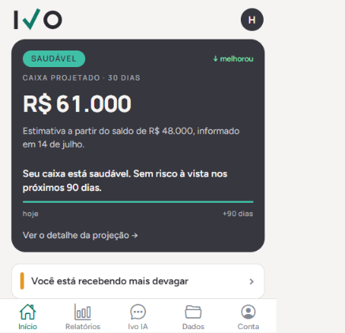
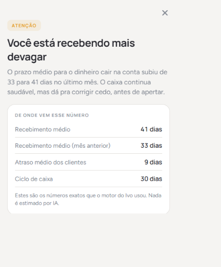
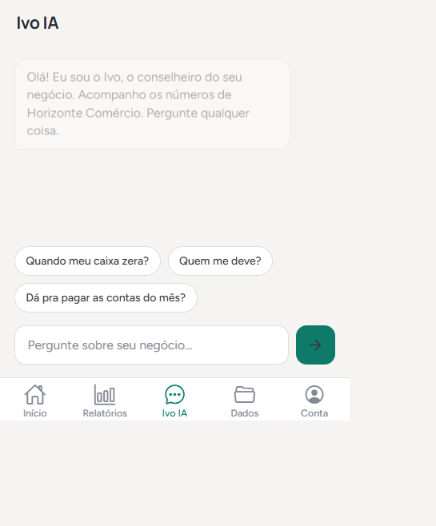
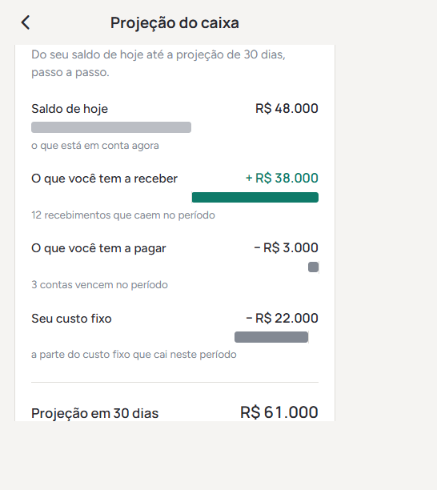

Saiba que o caixa vai apertar.Antes de apertar.
O Ivo acompanha o dinheiro do seu negócio todo dia e te avisa, em português claro, quando o caixa está indo pro vermelho, com data e valor. Você reage a tempo, não depois do susto.
É o Ivo de verdade, com dados de exemplo · sem cadastro, sem instalar nada

Você toca o seu negócio. Quem cuida do caixa?
Movimento não é a mesma coisa que caixa saudável. Seus clientes pagam semanas depois da venda, os custos chegam todo dia 5, e quando a conta aperta você já está dentro do aperto. Quase sempre a gente descobre tarde, pelo susto no extrato.
É o intervalo médio entre vender e o dinheiro cair. Nele, as contas continuam chegando.
Aluguel, equipe e impostos não esperam o seu dinheiro entrar.
Sem alguém olhando todo dia, o aperto só aparece no extrato — tarde demais.
Três passos. Depois é só receber o aviso.
Você conecta seus números
Extrato e recebimentos do seu negócio. Sem planilha complicada e sem trocar o seu sistema.
O Ivo calcula todo dia
Projeção de caixa, prazos de recebimento e margem. Cada número é calculado, nunca chutado.
Ele te avisa antes
No WhatsApp e no app, em português, com data e valor. Só te chama quando realmente importa.
Não é planilha. É um aviso que chega a tempo.
O aviso chega no seu WhatsApp e no aplicativo, com data e valor. E todo alerta mostra exatamente de onde veio cada número.



Os sinais que aparecem antes do problema.
Seu caixa pode zerar em menos de 60 dias.
Você vende mais, mas o dinheiro está demorando mais a chegar.
Sua margem caiu dois meses seguidos. O custo subiu ou o preço ficou para trás.
Quando está tudo bem, o Ivo fica quieto. Sem aviso, é bom sinal.
O vermelho só aparece quando o risco é real. Nada de alarme falso.
Seus números são seus. Ponto.
Nada é compartilhado
Seguimos a Lei Geral de Proteção de Dados. Seus dados servem só para calcular os seus indicadores. Não vendemos, não repassamos e não usamos para treinar inteligência artificial.
Criptografado e somente-leitura
Seus dados trafegam criptografados e ficam em servidor seguro. Conexões de dados são somente-leitura: o Ivo lê para calcular, nunca movimenta o seu dinheiro.
Todo número é rastreável
Cada número é calculado e conferido; a inteligência artificial nunca inventa um valor. Todo alerta mostra as contas que o motor usou, e você sempre vê de onde veio aquele número.
Cada fórmula é conferida por um especialista em finanças de pequenas empresas.
Um preço justo pra dormir tranquilo.
- Monitor de caixa, todo dia
- Avisos no WhatsApp e no app
- Projeção de caixa 30/60/90 dias
- Alertas do que pede atenção
- Tudo do Essencial
- Contas a pagar e a receber
- Histórico e comparações
- Tudo do Crescimento
- Todos os indicadores do motor
- Suporte prioritário
Sem fidelidade. A assinatura acontece no site, sem comissão de loja. Quero assinar →
O que costumam perguntar.
Quanto custa?
Como o Ivo pega meus números?
Meus dados ficam seguros?
A inteligência artificial pode errar um valor?
Preciso instalar alguma coisa?
Veja quando o seu caixa pode apertar.
Deixe seus dados e a gente te manda a simulação completa do seu caixa e reserva o seu lugar no piloto. Sem compromisso e sem custo.
Sem compromisso. Usamos seu contato só para te enviar a simulação e o aviso de lançamento.